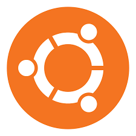
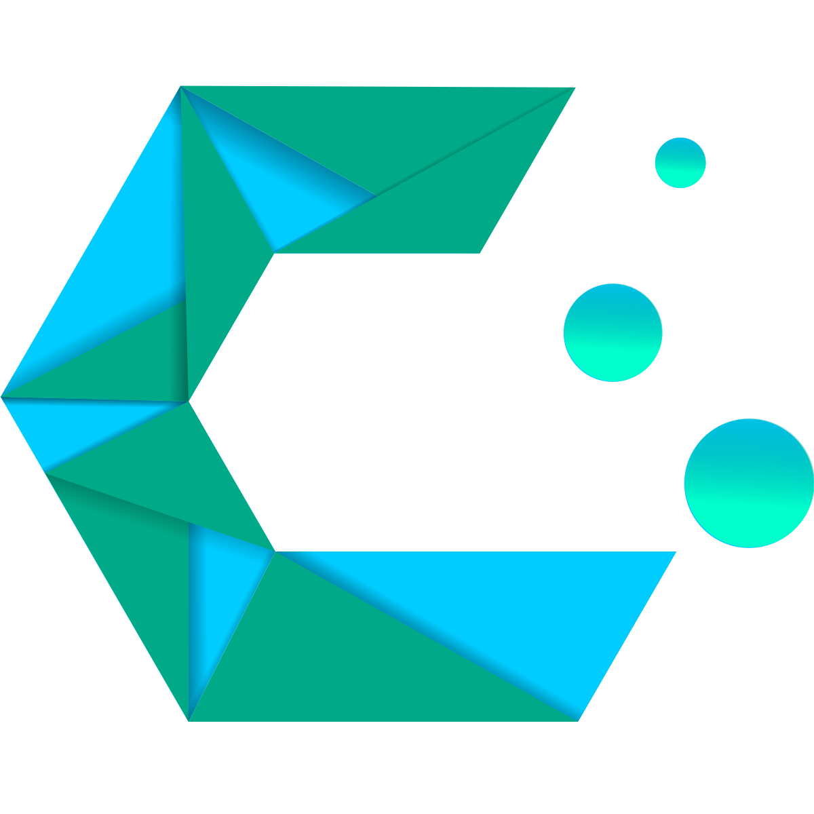

Wsparcie dla Windows 10 kończy się za:
Ładowanie...
1️⃣ Aktualizacja do Windowsa 11
Windows 11 to najnowszy system Microsoftu, zaprojektowany z myślą o nowoczesności, estetyce i wydajności.
- Nowy komputer? Windows 11 działa szybciej i płynniej na nowym sprzęcie.
- Używasz laptopa? Lepsze zarządzanie baterią i zasobami.
- Znudził Cię wygląd Windowsa 10? Świeży interfejs i centrowane menu Start.
- Gracz? Obsługa DirectStorage i Auto HDR.
Przejdź na Windows 11
2️⃣ Przejście na Windows 10 LTSC
Windows 10 LTSC to wersja systemu skupiona na stabilności, bezpieczeństwie i długoterminowym wsparciu.
- Dla firm i produkcji: brak aktualizacji funkcji, tylko poprawki bezpieczeństwa.
- Minimalizm: brak Cortany, Microsoft Store i zbędnych aplikacji.
- Starszy sprzęt? LTSC działa sprawnie nawet na starszych komputerach.
- Długoterminowość: do 10 lat wsparcia technicznego.
Windows 10 LTSC zawiera wersje próbną tzw. Evaluation
Wersja Evaluation Windows 10 LTSC
3️⃣ 🐧 Przeniesienie się na Linuxa
Linux to system wolny, elastyczny i w pełni kontrolowany przez użytkownika — idealny dla tych, którzy szukają alternatywy.
| Logo |
Nazwa |
Dla kogo? |
Zalety |
|  |
Ubuntu |
Początkujący |
Intuicyjny, duża społeczność, stabilność |
|  |
CachyOS |
Gracze / Zaawansowani |
Szybki, zoptymalizowany, oparty na Arch Linux |
 |
Linux Mint |
Użytkownicy Windowsa |
Wygląd podobny do Windowsa, lekki i stabilny |
- 🆓 Darmowy i open-source — nie płacisz za system ani aplikacje.
- 🛡️ Bezpieczny — mniejsza podatność na wirusy, pełna prywatność.
- ⚙️ Możliwość personalizacji — od wyglądu po zachowanie systemu.
- 💻 Działa na starszym sprzęcie — świetna alternatywa dla słabszych komputerów.
- 🧑💻 Idealny dla programistów — terminal, narzędzia, serwery w zasięgu ręki.
Pobierz Ubuntu
Sprawdź CachyOS
Pobierz Linux Mint
❔ Czy ta strona jest robiona przez Microsoft?
Nie. Strona została przygotowana przez RemoraTeam. Nie jesteśmy powiązani z Microsoftem.
💡 Znalazłeś błąd lub chcesz coś zasugerować?
Wyślij nam wiadomość e-mail na adres: itsmatisio@outlook.fr — chętnie przeczytamy Twoje pomysły!
Nie chcesz napisać maila? Możesz również napisać post na X oznaczając mnie (@itsmatisio) lub na discordzie RemoraTeam